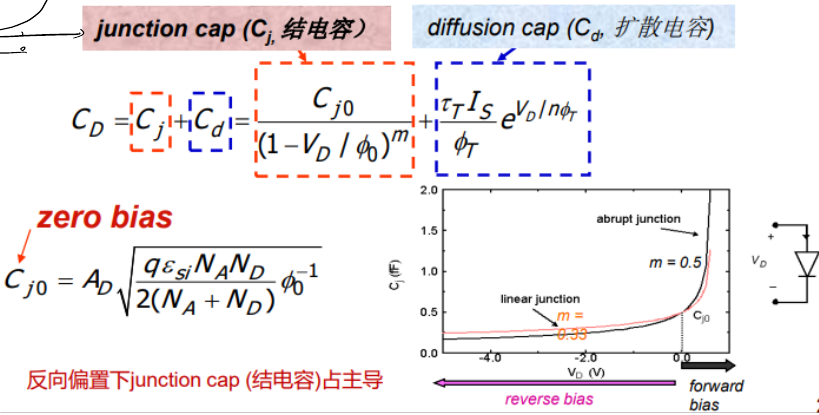

复习材料·Homework第 2 章往年 Homework 原题
题目来源
考试相关/DIC Review/Chap2 MOS管特性/hw2-answer.pdf · PDF页 2 · 原题号 选择题2 / 问题2
原题按原编号列出；实验题明确整理为读图或笔试问法。重复知识点保留各来源版本，避免漏掉不同参数与条件。
先读：本题所需概念
掺杂是加入杂质以改变载流子浓度； 区以空穴、 区以电子为多数载流子。两区接合形成 结，接口附近可移动电荷减少的区域叫耗尽层。 端比 端电势高是正偏，反过来是反偏。反偏增强使耗尽层增宽，结电容减小：，其中 是反偏幅值、 是零偏电容、 是内建势参数、 是掺杂分布指数。正偏时少数载流子储存还产生扩散电容。
知识出处：PPT/chapter2-device01-MOS-DC chara_20260915.pdf，PDF 第 8–16 页。
回看完整解释：4.1 接口为什么能阻止电荷继续扩散 · 4.2 外面接电压后，有哪几种情况 · 4.3 电流关系与手算模型 · 4.4 PN结为什么也有电容。题目中的专用参数以题干定义为准；可点带底纹的术语回查首次解释。
题目
当结的反向偏置电压增大时，其耗尽区宽度和结电容分别如何变化？
查看答案与解析
答案与解析
答案：，耗尽区宽度增大，结电容减小。
耗尽区是结附近缺少自由载流子的空间电荷区。反偏增强时，耗尽区变宽；从电容角度看，这相当于极板间距增大，因此电容减小。
若把反偏电压幅值记为 ，则：
常用结电容表达式为：
其中 为零偏结电容， 为内建电势， 为结梯度系数。随着 增大， 减小。若改用二极管有符号电压 ，反偏增强对应 变得更负，须注意符号约定。
